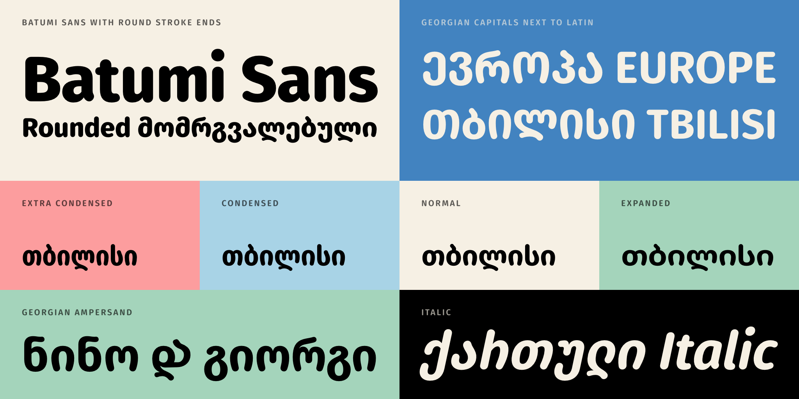
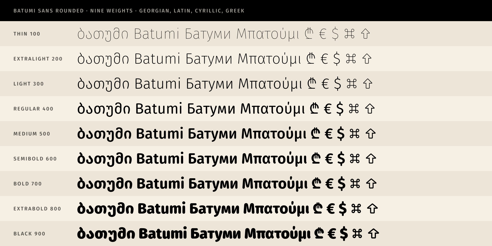

Batumi Sans Rounded is the rounded companion to
Batumi Sans, a type family for Georgian and Latin designed
for Borbalo by Koba Jgenti and built on
FiraGO and
Fira Sans. It has
the same widths, weights, italics and character set, with round stroke ends.
Weight (wght 100–900) and width (wdth 75–115) are
variable.
To contribute, see github.com/Borbalo/batumi-sans

Stroke ends are half circles and outer corners are rounded. The inside of every join stays sharp, so counters stay open in heavy weights and at small sizes (ბათუმი · ᲑᲐᲗᲣᲛᲘ · საქართველო).
Batumi Sans Rounded has the same vertical metrics as Batumi Sans, so the two can be mixed on one line or swapped without the layout moving. It is a rounded sans for text as well as headlines, suited to interfaces, signage, packaging and anything else that should read as friendly.
Like Batumi Sans, it covers Mkhedruli, Mtavruli, Asomtavruli and Nuskhuri,
keeps small differences in height between Mtavruli letters so that
look-alike capitals are easier to tell apart, and shows a Georgian ampersand
when & is typed in Georgian text, as in
ქვევრი & ღვინო. The word
და and the Latin ampersand are left unchanged.

Batumi Sans Rounded is derived under the SIL Open Font License from FiraGO (bBox Type GmbH and HERE Europe B.V.), Fira Sans (The Mozilla Foundation, Telefonica S.A., Carrois Corporate GbR and bBox Type GmbH) and Noto Sans Georgian (Google LLC).
ბათუმი სანსი მომრგვალებული (Batumi Sans Rounded) ბათუმი სანსის მომრგვალებული ვერსიაა: იგივე სიგანეები, წონები და კურსივი, ოღონდ მომრგვალებული ბოლოებით. ის კობა ჟღენტმა „ბორბალოსთვის“ შექმნა. ოჯახი FiraGO-სა და Fira Sans-ს ეფუძნება და ღია ლიცენზიით (SIL OFL 1.1) ვრცელდება.
პროექტში მონაწილეობისთვის იხილეთ github.com/Borbalo/batumi-sans